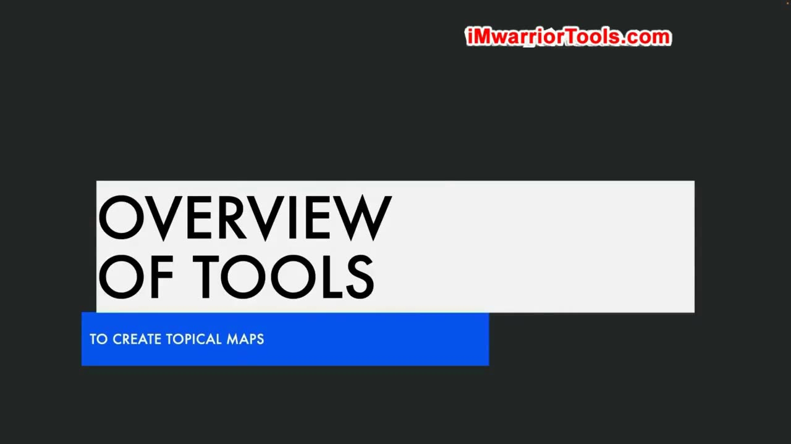
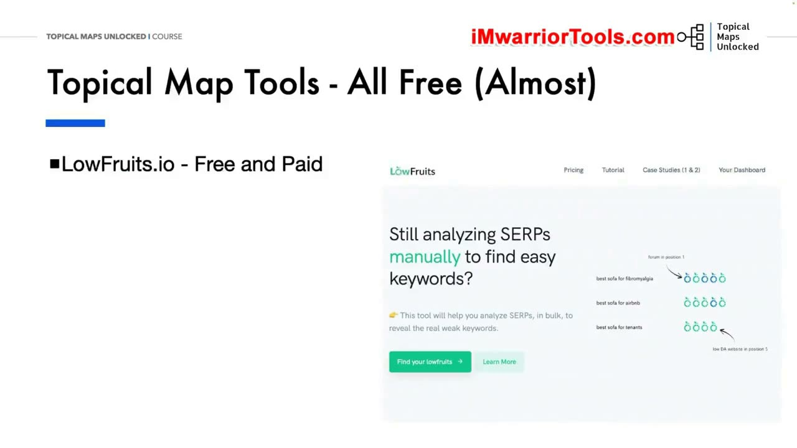
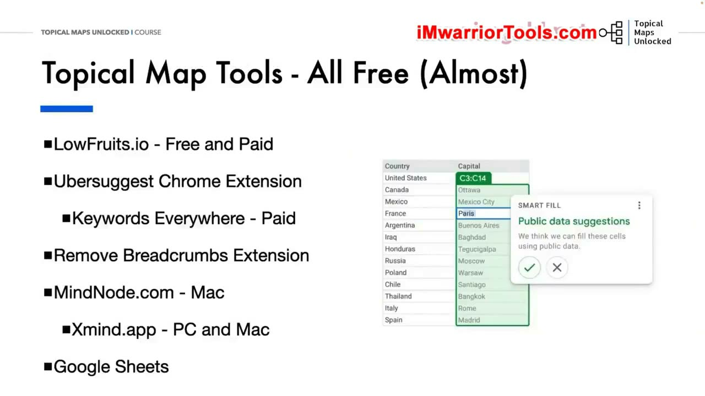

Overview of the Tools We Will Use
1. Mục tiêu công cụ: miễn phí hoặc chi phí thấp
Có rất nhiều công cụ khác nhau để nghiên cứu từ khóa và xây dựng Topical map. Trong khóa học Topical Maps Unlocked, định hướng chính là ưu tiên các công cụ miễn phí hoặc chi phí thấp. Khóa học không bắt buộc phải sử dụng các bộ công cụ đắt đỏ như Ahrefs hay Semrush để hoàn thành công việc một cách nhanh chóng và hiệu quả.

2. LowFruits và so sánh công cụ gom cụm từ khóa
Công cụ đầu tiên là LowFruits (lowfruits.io). Đây là công cụ có cả bản miễn phí và trả phí khi cần nhóm từ khóa. LowFruits thu thập dữ liệu từ Google Autocomplete, giúp hiển thị các điểm yếu (weak spots) trên SERP và tự động gom cụm từ khóa (keyword clustering) dựa trên kết quả tìm kiếm thực tế.
Yoyao giải thích rằng nhờ lấy dữ liệu trực tiếp từ Google, người dùng luôn nhận được những từ khóa liên quan mới nhất chứ không chỉ các từ khóa dài cố định. Ông chia sẻ đã thử nghiệm 13 công cụ SERP clustering khác nhau; LowFruits và Keyword Insights là hai công cụ luôn đứng đầu về độ chính xác. Ông ưu tiên chọn LowFruits vì chi phí thấp hơn, nhưng nếu người dùng muốn tạo content brief và viết bài trên cùng một nền tảng thì Keyword Insights cũng là lựa chọn đáng cân nhắc.

3. Tiện ích mở rộng Chrome: Ubersuggest và Keywords Everywhere
Để nghiên cứu từ khóa trực tiếp trên SERP, tiện ích mở rộng Chrome của Ubersuggest được giới thiệu với mô hình freemium (cho phép 40 lượt tìm kiếm miễn phí mỗi ngày, đủ dùng cho nhu cầu cơ bản). Điểm đặc biệt của tiện ích này là hiển thị ngay trên SERP những trang cụ thể đang xếp hạng cho từ khóa nào.
Tuy nhiên, từ khi phát hành phiên bản 1.0, Yoyao nhận thấy tiện ích Ubersuggest đôi khi hoạt động không đủ ổn định, một số chỉ số không hiển thị đều đặn trên trang kết quả. Vì vậy, đội ngũ TopicalMap đã chuyển sang sử dụng Keywords Everywhere. Đây là công cụ trả phí theo dạng credit giá rẻ, vận hành rất đáng tin cậy và cung cấp lượng dữ liệu phong phú trên Google cũng như nhiều nền tảng khác như YouTube, Pinterest, Instagram, Amazon.

4. Remove Breadcrumbs: xem URL thực tế trên SERP
Một tiện ích Chrome miễn phí rất hữu ích là Remove Breadcrumbs từ Glenn Gabe (Detail.com). Công cụ này ẩn thanh điều hướng breadcrumbs trên kết quả tìm kiếm Google và thay thế bằng URL thực tế đầy đủ của trang web đang hiển thị.
Điều này giúp người làm SEO quan sát ngay cấu trúc URL thực tế của đối thủ trên SERP (chẳng hạn như các trang Reddit hay Quora) mà không cần phải nhấp chuột vào từng liên kết để kiểm tra.

5. Lập bản đồ tư duy: MindNode và Xmind
Để phác thảo cấu trúc Topical map, Yoyao ưa thích sử dụng sơ đồ tư duy (mind map) vì nó cho phép nhìn thấy toàn cảnh trạng thái của bản đồ chủ đề và kế hoạch nội dung trong nháy mắt. MindNode là công cụ ông thường dùng trên hệ điều hành Mac, bản miễn phí đã đáp ứng đủ nhu cầu cốt lõi (bản trả phí có thêm nhãn dán, icon và tính năng biến mind map thành task list để đánh dấu bài đã viết).
Đối với người dùng hệ điều hành Windows, Xmind (xmind.app) là lựa chọn tương đương và hỗ trợ cả PC lẫn Mac. Ông nhấn mạnh việc chọn công cụ nào phụ thuộc vào hệ điều hành và thói quen thao tác phím tắt của mỗi người.

6. Google Sheets và TextTools xử lý dữ liệu
Google Sheets là công cụ bảng tính miễn phí không thể thiếu để quản lý dữ liệu từ khóa và chủ đề; khóa học sẽ cung cấp các mẫu template sẵn cho học viên khi bước vào phần thực hành. Cuối cùng là TextTools (texttools.org), một website tập hợp nhiều tiện ích xử lý chuỗi văn bản nhỏ như lọc trùng lặp danh sách, thêm tiền tố/hậu tố cho từ khóa, so sánh hai danh sách.
Trang web này duy trì nhờ quảng cáo nên có banner hiển thị, nhưng người dùng có thể đóng hoặc thu nhỏ dễ dàng. Đây là những công cụ đơn giản nhưng giúp tiết kiệm rất nhiều thời gian trong quy trình chuẩn bị dữ liệu.

Tài liệu kèm bài: danh sách liên kết và ưu đãi
Tài liệu PDF kèm bài (03-Overview of the Tools We Will Use.pdf) cung cấp mã ưu đãi độc quyền dành cho học viên khóa học: mã TOPICALMAP được giảm 15% credit cho người dùng mới và giảm 15% gói đăng ký định kỳ trên LowFruits. Ngoài ra, tài liệu đính kèm đường dẫn trực tiếp tới các công cụ: LowFruits, Keyword Insights, Ubersuggest Extension, Keywords Everywhere, Remove Breadcrumbs, MindNode, Xmind, Google Sheets và TextTools.
Nguồn và liên kết
- Topical Maps Unlocked 2.0 · Overview of the Tools We Will Use, bài học video và tài liệu PDF cùng tên.